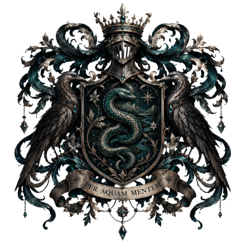
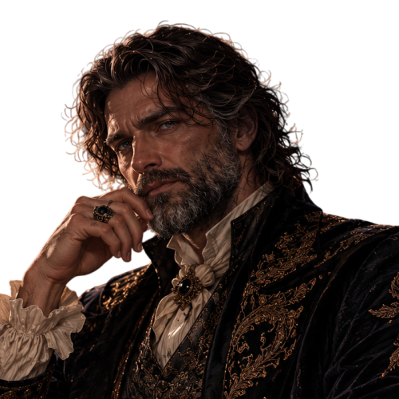
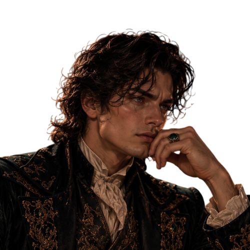
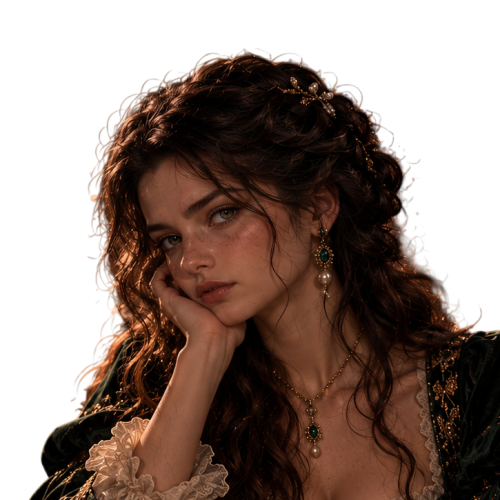
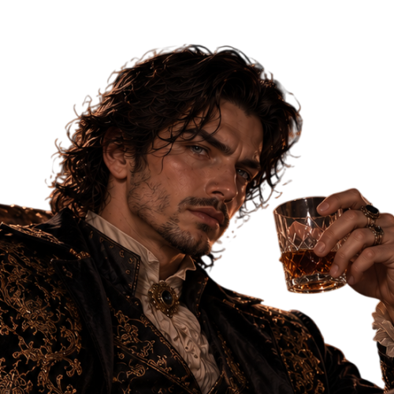
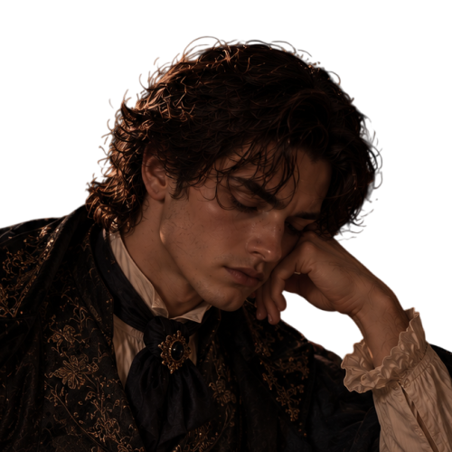

La Maison Rivers

L'histoire d'un nom, d'un blason et d'un héritage transmis à travers les siècles.
« Les rivières ne cessent jamais de couler. Elles changent de chemin, traversent les siècles, mais n'oublient jamais leur source. »
I. Les origines de la famille Rivers

Bien avant que Dean Rivers ne devienne magizoologiste au ministère de la Magie, bien avant la naissance d'Inaya et d'Ivy, le nom des Rivers était déjà connu parmi certaines des anciennes familles de sorciers britanniques.
Les premières traces de cette lignée remontent au XIIe siècle, dans une région reculée du nord de l'Angleterre, où les forêts anciennes côtoyaient des vallées traversées par de nombreux cours d'eau.
C'est là que vivait Aldric Rivers, considéré comme le premier véritable patriarche de la famille.
Né au sein d'une petite communauté de sorciers, Aldric n'avait rien d'un homme attiré par la gloire ou les démonstrations de puissance. Il était plutôt connu pour son tempérament réfléchi, son sens de l'observation et son intérêt presque obsessionnel pour les propriétés magiques de la nature.
Il passait de longues heures à étudier les plantes qui poussaient près des rivières, les comportements des créatures magiques et les enchantements permettant de préserver certains lieux.
À cette époque, alors que les tensions entre sorciers et Moldus rendaient la discrétion indispensable, Aldric avait choisi d'établir sa demeure loin des villages, dans une vallée naturellement protégée des regards.
Cette demeure, qui serait agrandie au fil des générations, deviendrait le premier domaine ancestral des Rivers.
Aldric avait une conviction qu'il répétait souvent à ses enfants :
« Celui qui cherche à dominer la magie finit par en devenir prisonnier. Celui qui cherche à la comprendre apprend à vivre avec elle. »
Cette philosophie allait profondément influencer les générations suivantes.
II. Le serpent de la rivière

L'histoire du blason Rivers commence avec Edran Rivers, le petit-fils d'Aldric, au XIIIe siècle.
Edran était un sorcier érudit, particulièrement intéressé par les créatures magiques aquatiques. Co
Au cours de l'un de ses voyages, il découvrit dans une rivière isolée une créature qu'il n'avait jamais rencontrée auparavant : un serpent magique aux écailles sombres, dont les reflets oscillaient entre le vert profond et le turquoise.
Il ne s'agissait pas d'un Basilic ni d'une créature légendaire dotée de pouvoirs extraordinaires, mais d'un serpent magique aquatique particulièrement rare dans cette région.
L'animal était blessé, probablement après avoir été pris dans un ancien piège de chasse.
Plutôt que de le capturer ou de chercher à tirer profit de sa rareté, Edran entreprit de le soigner.
Pendant plusieurs jours, il revint au même endroit, lui apportant de quoi se nourrir et surveillant la guérison de ses blessures.
Lorsque le serpent fut suffisamment rétabli, il disparut dans les profondeurs de la rivière.
Edran ne le revit jamais.
Pourtant, cette rencontre le marqua durablement.
Il avait découvert qu'une créature réputée dangereuse pouvait être approchée avec patience, à condition de respecter sa nature et de ne pas chercher à la contraindre.
Quelques années plus tard, lorsqu'il entreprit de faire réaliser un véritable blason pour sa famille, il choisit de placer un serpent aux écailles turquoise au centre de l'écu.
Non pas pour symboliser la menace ou la domination, mais pour représenter la prudence, l'intelligence et la capacité à s'adapter.
Ce serpent devint le symbole principal des Rivers.
III. Les deux corbeaux, gardiens de la mémoire

Au XIVe siècle, une descendante d'Edran, Isolde Rivers, apporta une nouvelle dimension à l'histoire familiale.
Isolde était une sorcière instruite, réputée pour son travail de conservation des manuscrits et ses recherches sur les anciens enchantements.
À une époque où de nombreux ouvrages étaient perdus, détruits ou dispersés, elle entreprit de réunir les écrits laissés par ses ancêtres.
Elle créa les premières véritables archives de la famille Rivers.
Celles-ci contenaient des observations sur les créatures magiques, des études botaniques, des correspondances et des récits familiaux.
Isolde avait également une affection particulière pour les corbeaux, dont elle admirait l'intelligence et la mémoire.
Deux corbeaux vivaient régulièrement dans les jardins de son domaine. Elle les avait nommés Corvin et Morrow.
Leur présence devint si familière qu'elle demanda à un artisan sorcier de les représenter de chaque côté du blason.
Les deux oiseaux furent placés face à face, comme s'ils veillaient sur le serpent et sur les connaissances qu'il représentait.
Dans la tradition familiale, ils reçurent deux significations distinctes :
Le premier corbeau représentait la mémoire, celle des ancêtres et des savoirs qu'il fallait préserver.
Le second représentait la vigilance, celle qui empêchait les générations futures de répéter aveuglément les erreurs du passé.
Depuis lors, les deux corbeaux sont considérés comme les gardiens symboliques de la Maison Rivers.
IV. La couronne et le heaume

Contrairement à certaines anciennes familles de sang-pur, les Rivers ne prétendaient pas descendre de la royauté.
La couronne qui surmonte leur blason n'est donc pas un symbole de souveraineté.
Elle apparut au XVe siècle, sous l'impulsion de Cassian Rivers, un sorcier particulièrement attaché aux traditions familiales.
Cassian estimait qu'une famille ancienne devait se montrer digne de son histoire, mais que cette dignité devait se mériter par le comportement plutôt que par la naissance.
Il fit ajouter un heaume d'argent au-dessus de l'écu, afin de représenter la responsabilité de chaque génération envers les suivantes.
La couronne fut placée au-dessus de celui-ci pour symboliser la maîtrise de soi, l'honneur et la continuité de la lignée.
L'argent fut privilégié à l'or, afin de rappeler que les Rivers valorisaient davantage la connaissance et la retenue que l'ostentation.
Les pierres turquoise qui ornent aujourd'hui la couronne furent ajoutées plus tard, en hommage au serpent et à la rivière des origines.
V. La devise : Per Aquam Mentem

Au XVIe siècle, Lucien Rivers, un érudit passionné par les langues anciennes, décida que le blason familial devait être accompagné d'une devise.
Il choisit :
PER AQUAM MENTEM
« Par l'eau, l'esprit »
Cette formule latine stylisée résumait, selon lui, l'essence même de la famille.
L'eau représentait le mouvement, l'adaptation et la continuité. L'esprit représentait l'intelligence, la réflexion et la connaissance.
Pour Lucien, une rivière constituait la meilleure image de ce que devait être une lignée : elle pouvait changer de direction, rencontrer des obstacles et traverser des territoires inconnus, sans jamais cesser d'avancer.
La devise fut inscrite sur un ruban argenté au pied du blason.
Elle est encore utilisée aujourd'hui par la famille Rivers
VI. Le blason à travers les siècles
Au fil du temps, l'emblème connut plusieurs transformations, mais ses principaux symboles furent conservés.
Le serpent turquoise
Intelligence, prudence et adaptation
Les deux corbeaux
Mémoire et vigilance
La rivière
Continuité de la lignée
La couronne
Honneur et maîtrise de soi
Le heaume argenté
Protection et responsabilité
Les étoiles
Curiosité et recherche du savoir
Les fleurs argentées
Renouveau et transmission
Les ornements végétaux et les pierres précieuses furent ajoutés progressivement par différentes générations.
La version actuelle, particulièrement détaillée, fut réalisée au XIXe siècle par un artisan spécialisé dans les objets héraldiques magiques.
Elle demeure la représentation officielle du blason Rivers.
VII. Les Rivers et la question du sang-pur
La famille Rivers appartient aux anciennes lignées de sorciers de sang-pur.
Pourtant, contrairement à certaines familles qui accordaient une importance excessive à la pureté du sang, les Rivers n'en firent jamais le fondement de leur identité.
Cela ne signifiait pas qu'ils rejetaient leurs traditions.
Au contraire, ils conservaient soigneusement leurs registres généalogiques, leurs objets familiaux et leurs manuscrits.
Mais leurs ancêtres considéraient que la naissance ne garantissait ni l'intelligence, ni le talent, ni la valeur morale.
Cette position leur valut parfois des désaccords avec d'autres familles anciennes, particulièrement lorsque les questions de statut du sang prirent davantage d'importance dans la société magique.
Les Rivers préféraient généralement éviter les querelles publiques.
Ils n'étaient ni des révolutionnaires ni des défenseurs aveugles des anciennes traditions.
Ils tenaient avant tout à préserver leur indépendance.
VIII. L'héritage de Dean Rivers

Plusieurs siècles après Aldric, Edran et Isolde, Dean Rivers grandit entouré de cet héritage.
Enfant, il entendait régulièrement les récits de ses ancêtres, notamment celui d'Edran et du serpent aquatique.
Cette histoire contribua à éveiller sa fascination pour les créatures magiques.
Plus tard, lorsqu'il étudia à Serdaigle, Dean développa davantage cet intérêt, jusqu'à en faire son métier de magizoologiste au ministère de la Magie.
Il n'était pas particulièrement démonstratif lorsqu'il parlait de sa famille, mais il accordait une réelle importance à son histoire.
À ses yeux, le blason ne représentait pas un privilège.
Il rappelait simplement qu'il appartenait à une longue succession de sorciers dont chacun avait laissé quelque chose derrière lui.
Lorsqu'il épousa Hazel Blackhorne, elle-même issue d'une ancienne famille de sorciers, les deux lignées unirent leurs histoires sans renoncer à leurs identités respectives.
Le blason Rivers demeura celui du foyer familial, tandis que les archives Blackhorne conservèrent leur place dans l'héritage de Hazel.
IX. Inaya et Ivy, les nouvelles héritières

Aujourd'hui, deux jeunes filles portent le nom Rivers.
Inaya Rivers, l'aînée, possède une curiosité insatiable et un goût prononcé pour la connaissance. Son tempérament ambitieux, son regard observateur et son indépendance rappellent à certains membres de la famille les descriptions laissées d'Isolde et de Cassian.
Bien qu'elle soit entrée à Serpentard, contrairement à ses deux parents qui avaient étudié à Serdaigle, cela ne change rien à sa place dans la lignée.
Après tout, le serpent figure au centre du blason familial depuis plusieurs siècles, bien avant sa naissance.
Ivy Rivers, sa cadette, possède quant à elle une personnalité plus solaire, espiègle et spontanée.
Elle partage avec son père une véritable fascination pour les créatures magiques et aime écouter ses récits, particulièrement lorsqu'il lui parle des animaux qu'il étudie.
Sa curiosité rappelle celle d'Edran, même si elle l'exprime avec beaucoup plus d'enthousiasme et de malice.
Les deux sœurs sont différentes, parfois opposées dans leurs réactions, mais elles représentent toutes les deux une nouvelle génération de la Maison Rivers.
Et peut-être qu'un jour, l'une d'elles ajoutera à son tour un chapitre aux archives familiales.
X. Une vieille tradition familiale
Il existe, parmi les Rivers, une tradition discrète qui remonte à Isolde.
Lorsqu'un enfant de la famille atteint l'âge de onze ans, il reçoit un petit carnet relié de cuir sombre, portant une reproduction argentée du serpent familial.
Il ne s'agit pas d'un objet doté de pouvoirs extraordinaires.
C'est simplement un carnet destiné à recueillir les premières observations, découvertes et réflexions de son propriétaire.
Les parents ne sont pas censés en lire le contenu sans permission.
Lorsque l'enfant devient adulte, il peut choisir de conserver le carnet ou de le confier aux archives familiales.
Dean reçut le sien avant son départ pour Poudlard.
Des années plus tard, il en offrit un à Inaya.
À l'intérieur de la couverture, il avait simplement écrit :
« Tu n'as pas à suivre le chemin de ceux qui t'ont précédée. Apprends seulement pourquoi ils l'ont emprunté. »
Inaya ne fit aucun commentaire en découvrant cette inscription.
Mais elle conserva précieusement le carnet.
Et lorsque Ivy demanda si elle aurait le sien un jour, Dean lui répondit qu'il lui faudrait encore patienter jusqu'à ses onze ans.
Ce qui, naturellement, ne l'empêcha pas de réclamer qu'on lui montre celui de sa sœur.
Ainsi, le blason Rivers n'est pas seulement un emblème de noblesse ou d'ancienneté. C'est le récit de plusieurs siècles de découvertes, de choix, d'erreurs et de transmissions. Le serpent rappelle la compréhension du vivant, les corbeaux gardent la mémoire, et la rivière continue de couler, génération après génération.
La Maison Rivers ne cherche pas à être la plus puissante. Elle cherche à ne jamais oublier d'où elle vient.
Retour